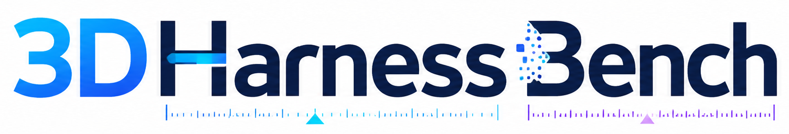
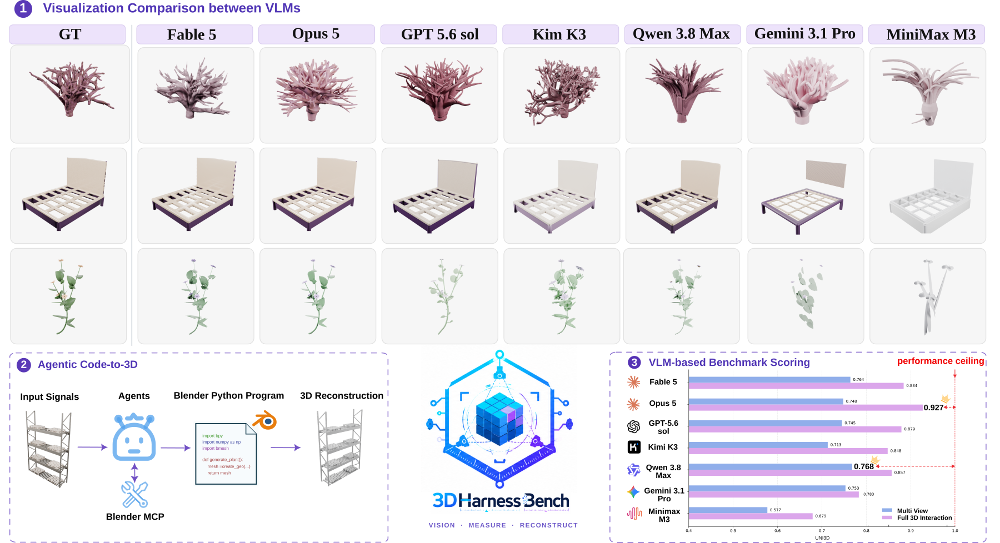
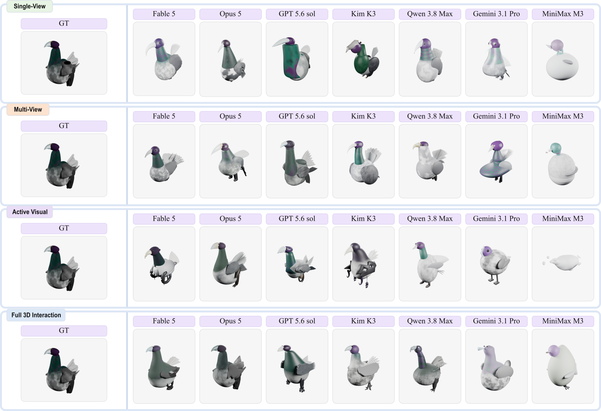
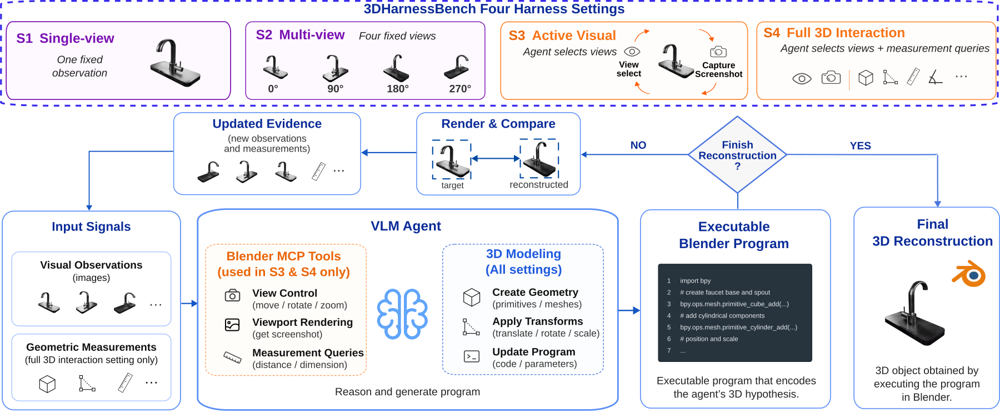
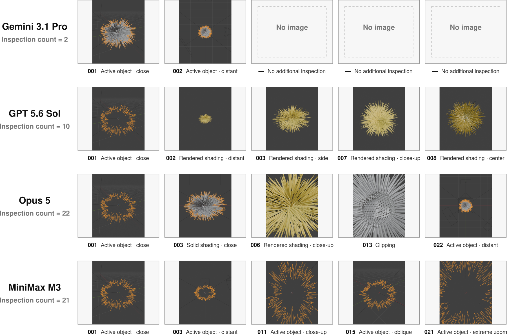
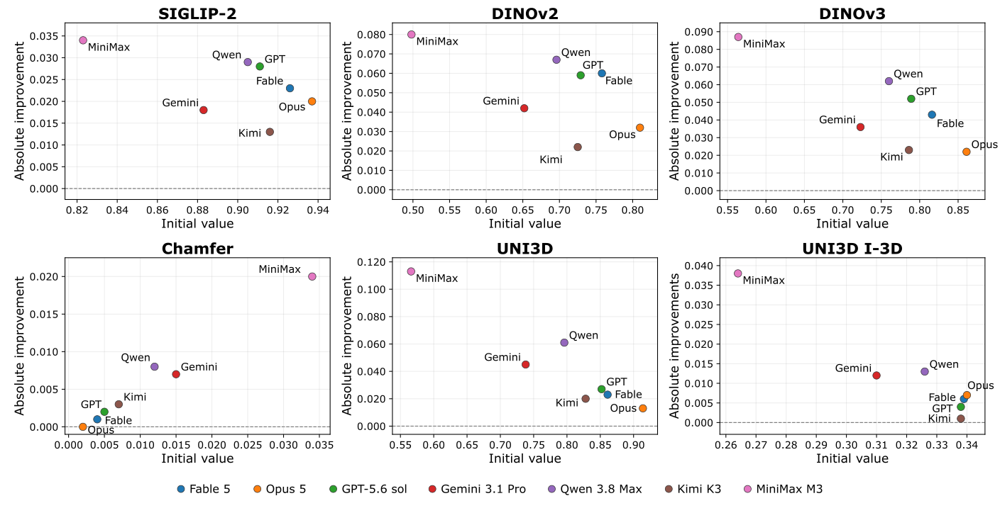
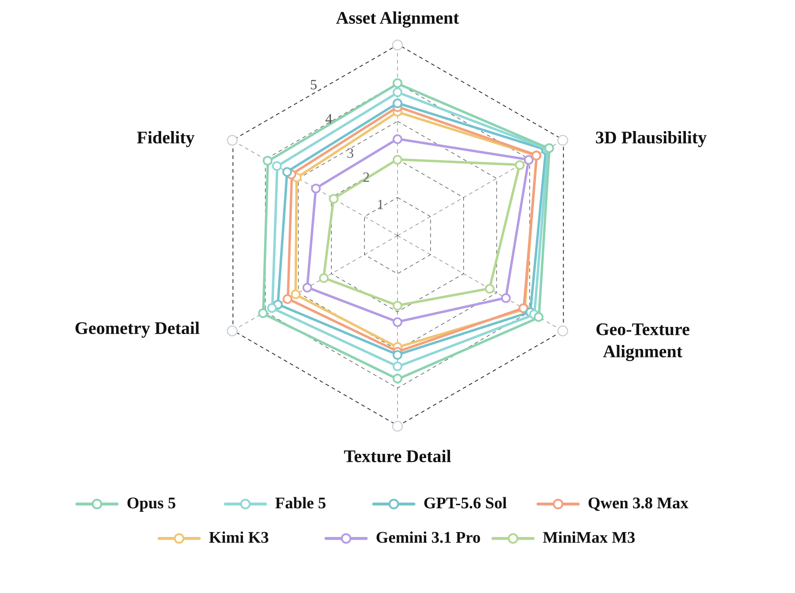

Single-view
One fixed image

Probing Agentic 3D-to-Code Capabilities of Frontier Vision-Language Models
TL;DR: We introduce 3DHarnessBench, a benchmark for agentic 3D-to-code reconstruction that evaluates how frontier VLMs exploit visual and geometric evidence to reconstruct a target object.

We introduce 3DHarnessBench, a benchmark that evaluates the agentic ability of frontier vision-language models (VLMs) to recover 3D geometry as Blender Python code from a variety of inputs. Unlike previous frameworks that prompt the VLMs with a fixed input (e.g., a single rendering or a text description), 3DHarnessBench evaluates four separate harness settings that progressively enable active agentic exploration, facilitated by recent Blender MCP functionality. Our hierarchy from Single-view, Multi-view, Active Visual (arbitrary viewpoint access), and Full 3D Interaction (complete access to the target object through Blender function calls) probes the models’ abilities in both visual perception and active inference, tool calling, and self-correction. We observe that the ability of all frontier models to recover 3D geometry improves significantly with richer function call access, although the improvements are strongly model-dependent, revealing highly uneven agentic 3D-to-code capabilities. We will release the benchmark, code, outputs, and agent trajectories for reproducible 3D evaluation.
Explore the same target reconstructed by all seven agents across the four harness settings. Use the tabs to switch examples.

We introduce 3DHarnessBench,a benchmark that keeps the executable reconstruction objective fixed while systematically varying the agent's access to the target. Here are the four harness settings:
One fixed image
Four fixed views
Agent-selected views
Agent-selected views + geometric queries

Across 100 targets, seven frontier VLM agents, and four target-access settings, richer access generally improves reconstruction quality—but the gains depend strongly on the agent.
| Agent | SigLIP-2 ↑ | DINOv2 ↑ | DINOv3 ↑ | Chamfer ↓ | Uni3D ↑ | Uni3D I-3D ↑ | Betti L1 ↓ |
|---|---|---|---|---|---|---|---|
| S1 Single-view one fixed observation | |||||||
| Fable 5 | 0.913 | 0.731 | 0.784 | 0.012 | 0.733 | 0.340 | 0.815 |
| Opus 5 | 0.910 | 0.704 | 0.764 | 0.015 | 0.725 | 0.340 | 0.830 |
| GPT-5.6 Sol | 0.915 | 0.714 | 0.783 | 0.016 | 0.715 | 0.332 | 1.000 |
| Kimi K3 | 0.896 | 0.664 | 0.734 | 0.020 | 0.678 | 0.332 | 0.893 |
| Qwen 3.8 Max | 0.913 | 0.731 | 0.777 | 0.017 | 0.740 | 0.346 | 0.835 |
| Gemini 3.1 Pro | 0.904 | 0.692 | 0.756 | 0.016 | 0.728 | 0.335 | 0.776 |
| MiniMax M3 | 0.833 | 0.490 | 0.576 | 0.028 | 0.495 | 0.263 | 0.921 |
| S2 Multi-view four fixed views | |||||||
| Fable 5 | 0.927 | 0.760 | 0.811 | 0.011 | 0.764 | 0.345 | 0.805 |
| Opus 5 | 0.921 | 0.738 | 0.796 | 0.011 | 0.748 | 0.343 | 0.931 |
| GPT-5.6 Sol | 0.925 | 0.764 | 0.816 | 0.015 | 0.745 | 0.326 | 1.000 |
| Kimi K3 | 0.909 | 0.702 | 0.765 | 0.014 | 0.713 | 0.338 | 0.925 |
| Qwen 3.8 Max | 0.920 | 0.753 | 0.805 | 0.011 | 0.768 | 0.344 | 0.768 |
| Gemini 3.1 Pro | 0.908 | 0.700 | 0.774 | 0.015 | 0.753 | 0.331 | 0.736 |
| MiniMax M3 | 0.847 | 0.522 | 0.617 | 0.022 | 0.577 | 0.299 | 0.983 |
| S3 Active Visual agent-selected views | |||||||
| Fable 5 | 0.932 | 0.767 | 0.822 | 0.006 | 0.832 | 0.349 | 0.663 |
| Opus 5 | 0.939 | 0.796 | 0.843 | 0.004 | 0.871 | 0.347 | 0.611 |
| GPT-5.6 Sol | 0.931 | 0.760 | 0.817 | 0.007 | 0.823 | 0.342 | 0.864 |
| Kimi K3 | 0.925 | 0.740 | 0.802 | 0.005 | 0.819 | 0.336 | 0.685 |
| Qwen 3.8 Max | 0.919 | 0.729 | 0.789 | 0.006 | 0.809 | 0.331 | 0.711 |
| Gemini 3.1 Pro | 0.865 | 0.600 | 0.674 | 0.015 | 0.691 | 0.315 | 0.853 |
| MiniMax M3 | 0.808 | 0.447 | 0.527 | 0.034 | 0.482 | 0.250 | 0.974 |
| S4 Full 3D Interaction views + geometric queries | |||||||
| Fable 5 | 0.949 | 0.818 | 0.859 | 0.003 | 0.884 | 0.345 | 0.557 |
| Opus 5 | 0.957 | 0.842 | 0.883 | 0.002 | 0.927 | 0.347 | 0.473 |
| GPT-5.6 Sol | 0.939 | 0.788 | 0.841 | 0.003 | 0.879 | 0.342 | 0.677 |
| Kimi K3 | 0.929 | 0.747 | 0.809 | 0.004 | 0.848 | 0.339 | 0.749 |
| Qwen 3.8 Max | 0.934 | 0.763 | 0.822 | 0.004 | 0.857 | 0.339 | 0.750 |
| Gemini 3.1 Pro | 0.901 | 0.694 | 0.759 | 0.008 | 0.783 | 0.322 | 0.588 |
| MiniMax M3 | 0.857 | 0.578 | 0.651 | 0.014 | 0.679 | 0.302 | 0.821 |
Bold marks the best displayed value within each setting. ↑ higher is better; ↓ lower is better.
| Setting | SigLIP-2 ↑ | Chamfer ↓ | Uni3D ↑ | Betti L1 ↓ |
|---|---|---|---|---|
| Baseline | 0.9254 | 0.0199 | 0.7038 | 0.7567 |
| + Grid | 0.9321 | 0.0172 | 0.8351 | 0.7487 |
| + Pose | 0.9419 | 0.0077 | 0.8387 | 0.8071 |
| + Grid + Pose | 0.9391 | 0.0110 | 0.8098 | 0.9104 |
Camera pose information significantly improves reconstruction quality, while background grid has a limited impact on the geometry metrics.
| Setting | SigLIP-2 ↑ | Chamfer ↓ | Uni3D ↑ | Betti L1 ↓ |
|---|---|---|---|---|
| Images | 0.9173 | 0.0150 | 0.8133 | 0.9050 |
| + Global | 0.9309 | 0.0103 | 0.8088 | 0.7093 |
| + Parts | 0.9256 | 0.0099 | 0.8557 | 0.4186 |
| + Global + Parts | 0.9307 | 0.0084 | 0.8296 | 0.5783 |
The parts measurements improve the reconstruction quality, especially in terms of topology and geometry.
In the Active Visual setting, agent's inspection involves a combination of observation quality and acquisition strategy.

We compare the initial reconstruction and the final reconstruction after self-correction for each agent under Full 3D Interaction.


Different harness settings reveal large differences in model calls, MCP calls, reconstruction versions, latency, and cost.
| Agent | API Calls | MCP Calls | Versions | Output Tokens ↓ | Cost ↓ | Latency (s) ↓ |
|---|---|---|---|---|---|---|
| S1 Single-view fixed image | ||||||
| Fable 5 | 11 | – | 4.14 | 51,846 | 2.00 | 382 |
| Opus 5 | 12 | – | 4.32 | 101,440 | 2.04 | 780 |
| GPT-5.6 Sol | 4 | – | 4.00 | 30,856 | 1.26* | 664 |
| Kimi K3 | 15 | – | 4.39 | 28,199 | – | 928 |
| Qwen 3.8 Max | 4 | – | 4.41 | 39,959 | – | 758 |
| Gemini 3.1 Pro | 4 | – | 4.57 | – | – | 429 |
| MiniMax M3 | 6 | – | 6.65 | 16,640 | – | 217 |
| S2 Multi-view 4 fixed views | ||||||
| Fable 5 | 33 | – | 4.11 | 68,625 | 2.54 | 428 |
| Opus 5 | 34 | – | 4.19 | 130,053 | 2.55 | 946 |
| GPT-5.6 Sol | 4 | – | 4.00 | 34,308 | 1.47* | 744 |
| Kimi K3 | 18 | – | 4.70 | 30,410 | – | 1,065 |
| Qwen 3.8 Max | 4 | – | 4.24 | 41,173 | – | 935 |
| Gemini 3.1 Pro | 4 | – | 4.56 | – | – | 587 |
| MiniMax M3 | 6 | – | 6.81 | 18,652 | – | 356 |
| S3 Active Visual agent-selected views | ||||||
| Fable 5 | 58 | 51 | 7.21 | 153,361 | 7.93 | 860 |
| Opus 5 | 116 | 87 | 17.20 | 328,147 | 10.74 | 1,790 |
| GPT-5.6 Sol | 55 | 69 | 15.09 | 45,004 | 3.24* | 939 |
| Kimi K3 | 114 | 41 | 12.61 | 53,444 | – | 2,370 |
| Qwen 3.8 Max | 393 | 55 | 11.63 | 341,310 | – | 5,400 |
| Gemini 3.1 Pro | 43 | 37 | 10.59 | – | – | 469 |
| MiniMax M3 | 431 | 156 | 23.87 | 115,309 | – | 6,287 |
| S4 Full 3D Interaction views + geometric queries | ||||||
| Fable 5 | 42 | 18 | 7.44 | 154,278 | 6.52 | 1,064 |
| Opus 5 | 80 | 34 | 15.18 | 380,011 | 7.92 | 1,962 |
| GPT-5.6 Sol | 70 | 35 | 12.31 | 50,484 | 4.54* | 1,344 |
| Kimi K3 | 75 | 25 | 11.72 | 54,086 | – | 2,460 |
| Qwen 3.8 Max | 257 | 51 | 8.88 | 456,831 | – | 8,206 |
| Gemini 3.1 Pro | 38 | 22 | 6.45 | – | – | 448 |
| MiniMax M3 | 172 | 67 | 10.59 | 76,278 | – | 1,905 |
Cost is the CLI-reported session cost where available; * denotes token-based estimates. “–” means not reported or not applicable.

Parts of this work were supported by the ERC Consolidator Grant 101087347 (VEGA), Institut Carnot TSN, as well as gifts from Ansys Inc., and Adobe Research.